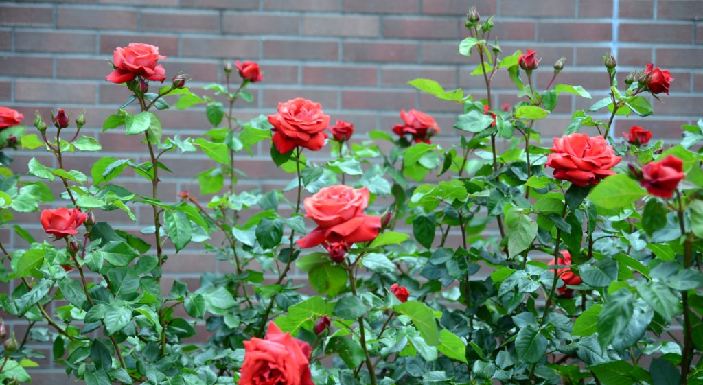
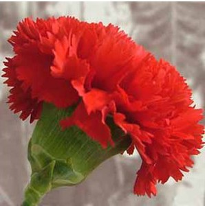
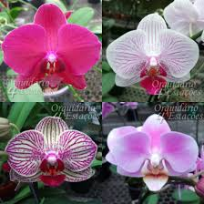
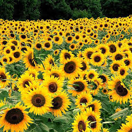
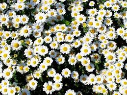

Minimalismo – A tendência que veio para ficar

O minimalismo é a tendência que veio para ficar. Quer entender melhor? Então vem!
Flor é a estrutura reprodutora característica das plantas angiospérmicas. Sua função é produzir sementes através da reprodução sexuada. Para as plantas, as sementes representam o embrião, que irá germinar quando entrar em contato com um substrato propício; as sementes são o principal meio através do qual as espécies de espermatófitas se perpetuam e se propagam.
Existem mais de 400 mil tipos de flores no nosso planeta e algumas são populares por sua fragrância ou beleza única
Se somarmos as espécies de abelhas, pássaros e borboletas, não chegaremos perto dos diferentes tipos de flores que existem no mundo. Muitas flores crescem na natureza em florestas, pastos, desertos e cavernas, enquanto outras tantas são cultivadas em jardins.
As flores também fazem parte das ocasiões mais importantes de nossas vidas. Elas estão visivelmente presentes em aniversários, funerais, formaturas, casamentos e outras ocasiões, formando parte integrante de nossas vidas. Descubra um pouco mais sobre essa grande diversidade e conheça alguns tipos de flores a seguir.
Certamente todas as flores encontradas na natureza são lindas e algumas são muito populares por sua beleza ou fragrância. .
Conheça, a seguir, algumas das espécies de flores mais conhecidas e importantes:
Não há dúvida sobre isso: a rosa é a flor mais popular e aclamada do mundo. Disponível em uma variedade de tamanhos, formas e cores, as rosas simbolizam afeição e ternura. As pessoas oferecem buquês em ocasiões como aniversário, casamento e eventos especiais, já que essa flor é verdadeiramente inspiradora.
Os cravos datam de mais de 2.000 anos. Eles são ricos em mitologia, simbolismo e até debate, principalmente por causa do nome.
A orquídea é uma das flores mais graciosas do mundo. É uma planta ornamental disponível em belos tons de rosa, branco, roxo, vermelho púrpura e muitas outras.
Em síntese, orquídeas simbolizam força, beleza e luxo, e na Grécia antiga estavam relacionadas à virilidade.
Também conhecido como Helianthus, seu nome científico, o girassol é uma das flores mais marcantes do mundo. Seu nome vem das palavras gregas helios, que significa sol, e anthos, que significa flor.
Com 67 espécies, o girassol tem sua origem na América do Norte, com duas delas pertencentes a América do Sul.
A flor do bem-me-quer, mal-me-quer, a flor do amor. A margarida (Leucanthemum vulgare) na verdade não é uma flor e sim uma inflorescência o que significa que cada pétala sua, é uma flor!

O minimalismo é a tendência que veio para ficar. Quer entender melhor? Então vem!

Vem que te conto mais sobre a ultima tendencia na primaveira!!